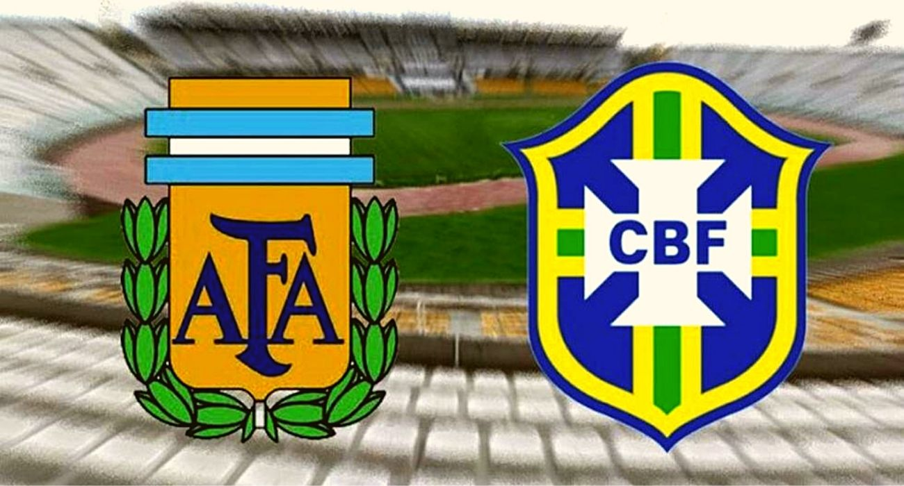

13 of My Favorite UI/UX Goodies
There is a no bigger battle to watch than two South American titans in the form of Argentina and Brazil colliding with each other to crown themselves kings of the continent in the showpiece final...